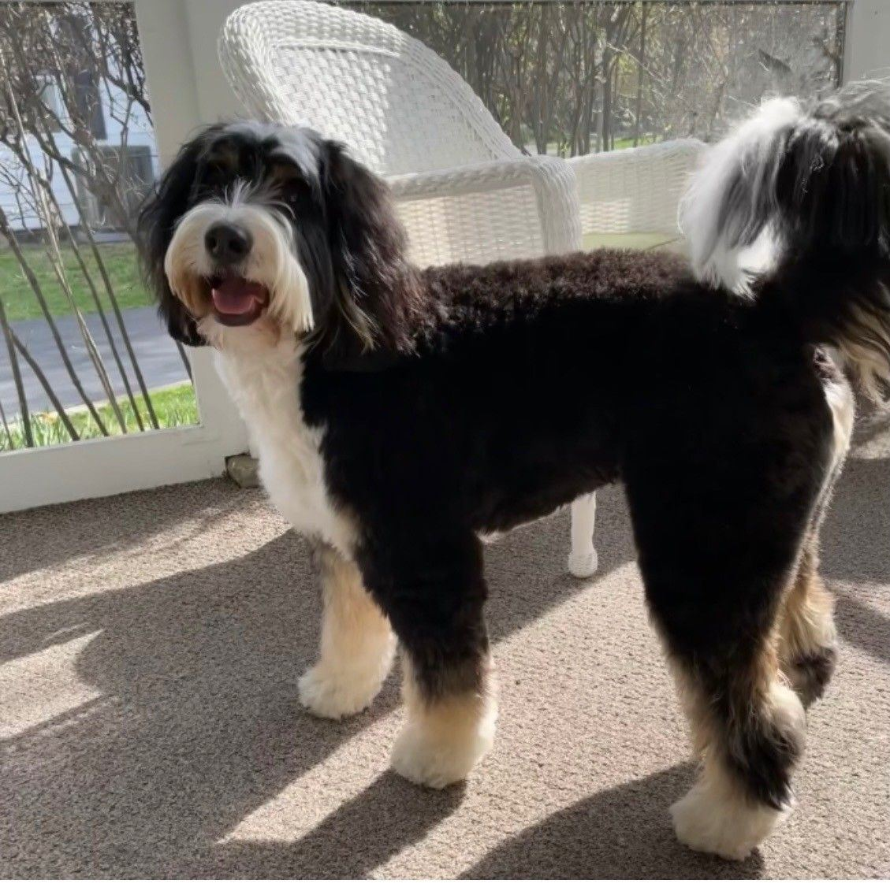
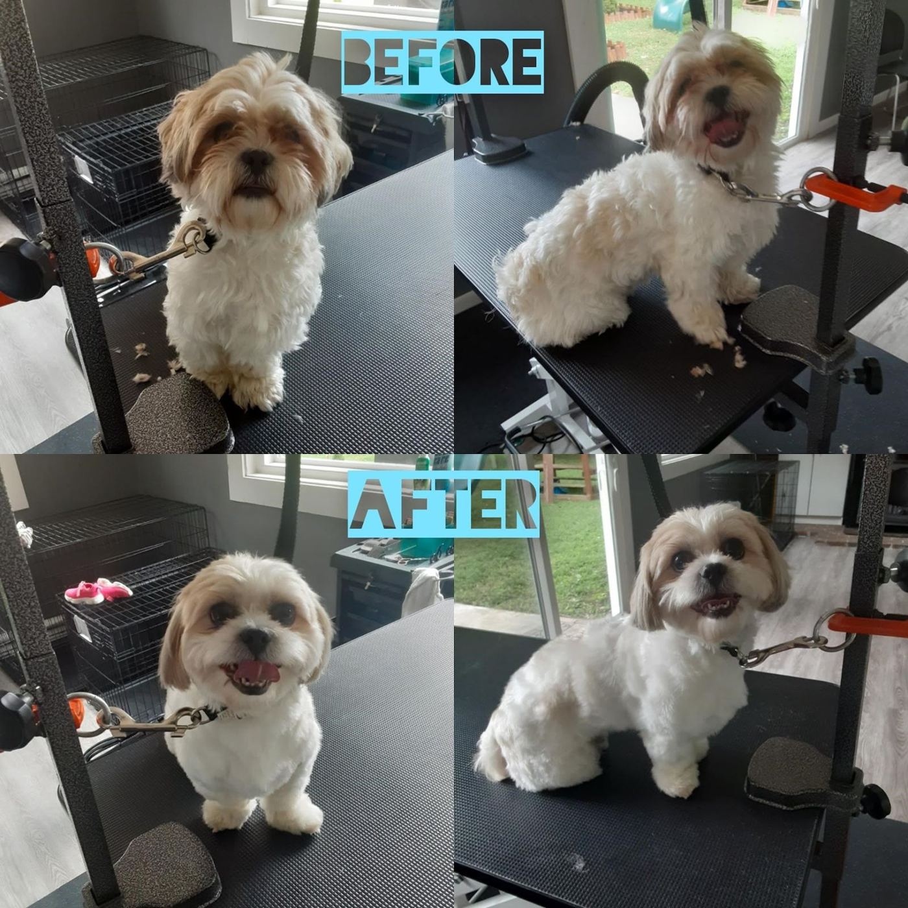
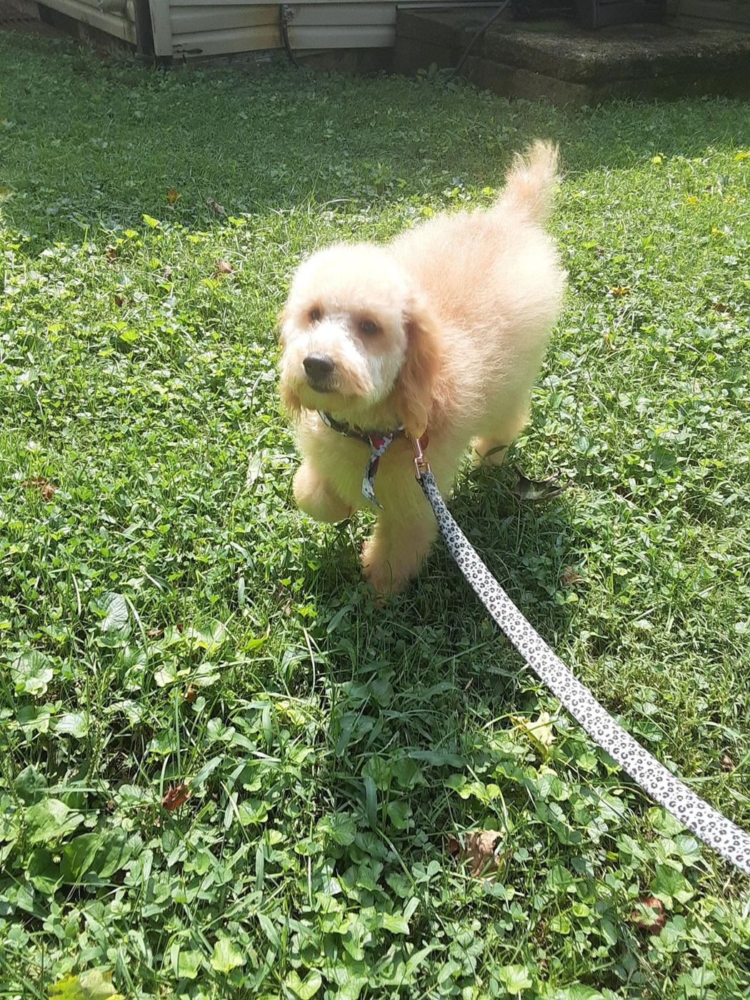
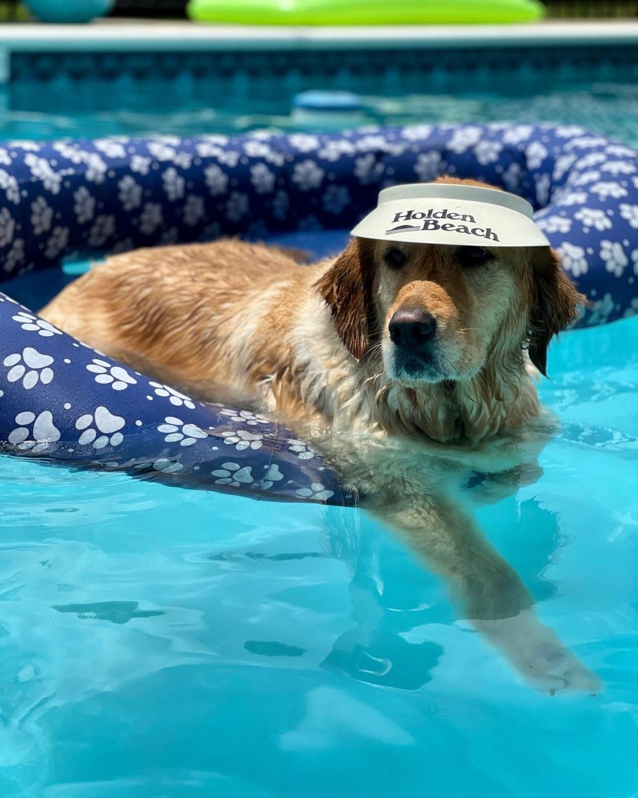

Dog grooming · Newark, Ohio
Cardinal Hill Grooming
Candice’s small grooming shop on Kelley Ln, where dogs come back looking top notch and smelling clean.

5.0★ · 26 reviews
What’s in a groom
✂CutsFrom first puppy cuts to needy grooming projects.
🛁Mud bath & hot oil conditionerPart of "the works," as one happy owner put it.
✦Nail buffA finishing touch for clean, comfortable paws.
⏱On-time pickupCandice lets you know when she’s wrapping up.
Good dogs




From the owners
Hours
Mon8 AM–4 PM
Tue9 AM–5 PM
Wed8 AM–2 PM
Thu9 AM–5 PM
Fri8 AM–4 PM
Sat–SunClosed